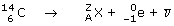

a)  Esta reacción es una desintegración β: un núclido se rompe espontáneamente, sin ser bombardeado, produciendo un electrón, un antineutrino y otro núclido Conservación del número atómico: 6 = A - 1, A = 7 Conservación del número másico: 14 = Z + 0, Z = 14 El núclido de número atómico 7 corresponde al elemento Nitrógeno |